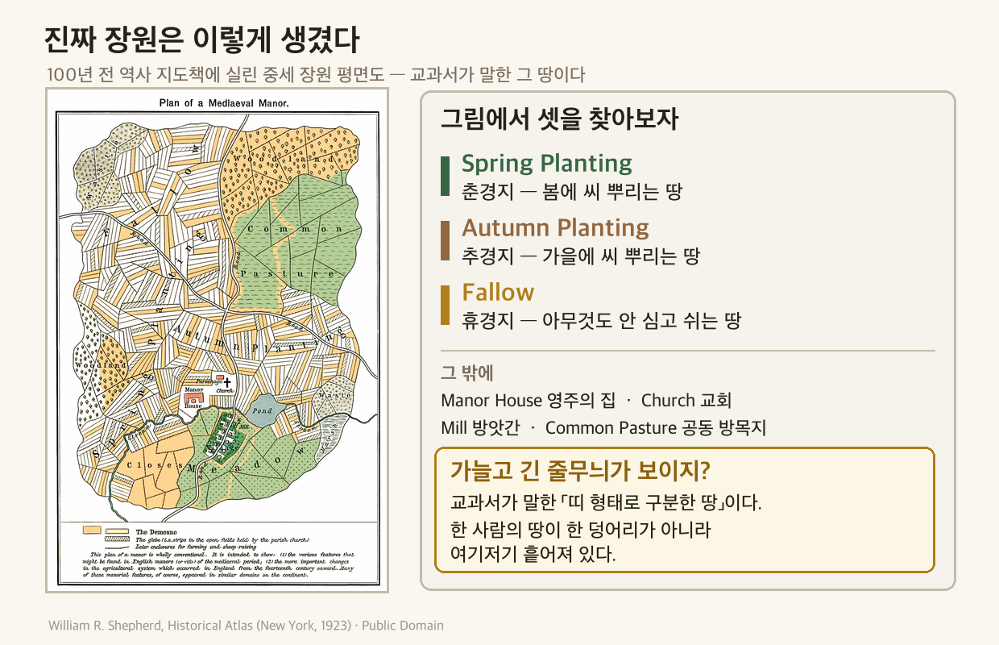

역사① Ⅲ단원 3-3-1 — "지켜 줄게. 대신 넌 여길 못 떠나." (서유럽 봉건 사회의 성립)
"지켜 줄게. 대신 넌 여길 못 떠나."
주종 관계 — 기사와 기사가 맺은 관계. 일방적인 복종이 아니라 서로 의무를 지는 계약이다.
| 주군이 하는 일 | 봉신이 하는 일 |
|---|---|
| 봉토(땅)를 주고 보호한다 | 충성과 군사적 봉사를 바친다 |
장원제 — 받은 봉토를 굴리는 방식. 봉신은 장원의 영주가 되어 그 안을 다스렸다.
`세금 징수` · `치안 유지` · `재판` — 원래 왕이 하던 일을 영주가 대신 가졌다(불입권).
농노 ≠ 노예 — 이름에 노(奴) 자가 들어가 헷갈리지만 둘은 다르다.
| 노예 | 농노 | |
|---|---|---|
| 결혼·가정 | 불가 | 가능 |
| 재산 | 없음 | 약간 가질 수 있음 |
| 사고팔기 | 물건처럼 거래됨 | 아님 |
| 이동 | — | 영주 허락 없이 장원을 못 떠남 |
왜 왕이 약해졌나 — 봉건제는 왕이 센 제도가 아니다. 정반대다.
`장원마다 영주가 왕 노릇` + `기사는 주군 이외의 상위 주군에게 의무 없음` → 지방 세력 강화 · 왕권 약화 → 지방 분권

🎙️ 위 이야기의 앞부분은 지난 시간에 배운 거야 — 프랑크 왕국이 셋으로 갈라진 그 뒤의 일이거든. 오늘 배울 건 결국 한 문장이야. "지켜 줄게. 대신 —" 그 '대신' 뒤에 뭐가 붙었는지 보러 가자.
📌 학습 목표
- 중세 서유럽 봉건 사회의 특징을 설명할 수 있다.
- 중세 서유럽 문화의 특징을 파악할 수 있다.
✨ 오늘의 고급 단어
| 낱말 | 쉽게 말하면 | 한자 뜯어보기 | 문장 속에서 |
| 봉건(封建) | 땅을 나눠 주고 그 대가로 충성을 받는 방식 | 봉(封, 내려 줌) + 건(建, 세울) | "서유럽에 봉건 사회가 자리 잡았다." |
| 주종(主從) 관계 | 주인과 따르는 사람의 관계 | 주(主, 주인) + 종(從, 따를) | "기사와 주군은 주종 관계를 맺었다." |
| 봉토(封土) | 충성의 대가로 받은 땅 | 봉(封, 내려 줌) + 토(土, 땅) | "주군은 봉신에게 봉토를 주었다." |
| 장원(莊園) | 영주가 다스리는 자급자족 농촌 | 장(莊, 농막) + 원(園, 뜰) | "봉토는 장원 형태로 운영되었다." |
| 영주(領主) | 자기 땅을 다스리는 주인 | 영(領, 거느릴) + 주(主, 주인) | "봉신은 장원의 영주가 되었다." |
| 농노(農奴) | 땅에 매인 농민 | 농(農, 농사) + 노(奴, 종) | "장원의 농민은 대부분 농노였다." |
💡 오늘 딱 두 개만 잡자 — 주종 관계(위쪽 세계가 어떻게 굴러갔나)와 농노(아래쪽 삶이 어땠나).
📖 1단계: 왕이 오지 않는다
📕 교과서 90~91쪽 펴고 채우기 · 배정 시간 6분
프랑크 왕국이 셋으로 나뉜 뒤, 서유럽은 ①을 비롯한 이민족의 침입으로 큰 혼란에 빠졌다. 왕의 힘은 이들을 막기에 너무 약했다. 그러자 힘 있는 사람들이 스스로 성을 쌓고 무력을 갖춘 ②가 되었다.
🎙️ 포인트는 "왕이 못 지켜 줬다"야. 오늘 배울 것 중 앞쪽 절반이 전부 여기서 나와 — 기사·장원·농노·지방 분권. 지켜 줄 사람이 멀리 있으면 사람은 가까운 힘에 붙게 되거든.
다만 뒤쪽 절반인 교회는 여기서 나온 게 아니야. 뿌리가 따로 있어. 그 둘이 어디서 만나는지는 5단계에서 보게 될 거야.

⚙️ 위 그림이 오늘의 출발점이야. 왕의 군대가 약해서가 아니라 늦어서 못 막았어.
📖 2단계: 기사들의 계약 — 주종 관계
📕 교과서 91쪽 펴고 채우기 · 배정 시간 8분
기사들은 자기보다 강한 기사를 ③으로 섬기고 충성과 봉사를 맹세했다. 그러면 주군은 그 기사에게 땅, 곧 ④를 주고 자기 신하, 곧 봉신으로 삼았다. 이렇게 맺어진 관계를 ⑤라고 한다.
중요한 건 이게 일방적인 복종이 아니었다는 점이다. 주군과 봉신은 서로 의무를 다하자는 ⑥을 맺은 사이였고, 어느 한쪽이 의무를 지키지 않으면 관계는 깨질 수 있었다.
⚠️ 여기가 시험 단골 — 주종 관계는 양쪽 다 의무가 있는 계약이다. "충성해라, 끝"이 아니라 "충성한다 / 대신 보호하고 땅을 준다"의 맞교환. 한쪽이 어기면 깨진다는 문장을 꼭 기억해 둬.
🔁 이름이 같은 두 봉건제
1학기에 배운 중국 주 왕조의 봉건제(2단원)와 이름이 같다. 그런데 뿌리가 다르다.
| 중국 주 왕조 | 중세 서유럽 | |
| 무엇으로 묶였나 | 혈연 — 왕족·공신을 제후로 | 계약 — 주군과 봉신의 약속 |
| 깨질 수 있나 | 핏줄은 못 끊는다 | 의무를 안 지키면 깨진다 |
| 시간이 지나면 | 혈연이 멀어져 느슨해짐 | 계약이 당사자끼리만 유효 |
| 결과 | 왕실 권위 약화 → 제후 독자 세력화 | 왕권 약화 → 지방 분권 |
🎙️ 재미있는 건 출발이 달랐는데 결말이 비슷하다는 점이야. 한쪽은 핏줄이 멀어져서, 다른 쪽은 계약이 옆으로 안 이어져서 — 둘 다 왕이 약해졌어.

🎙️ 이름이 많아서 헷갈리는 게 아니야. 두 가지를 같이 부르고 있어서 그래.
왕·제후·기사·농노는 사다리에서 어디쯤 있나(지위)이고, 주군·봉신은 지금 누구를 보고 있나(역할)야. 그래서 같은 제후 한 사람이 위를 보면 봉신, 아래를 보면 주군, 자기 땅에서는 영주가 돼. 한 사람이 이름 셋을 가진 거지.
📖 3단계: 땅 위의 삶 — 장원과 농노
📕 교과서 91쪽 펴고 채우기 · 배정 시간 7분
봉토는 ⑦이라는 형태로 운영되었다. 봉신은 그곳의 ⑧가 되어 주군의 간섭 없이 자기 땅을 다스렸다. 장원에서 농사짓는 사람들은 대부분 ⑨였다.
농노는 영주에게 방앗간·빵 가마 같은 시설 사용료와 세금을 바치고, 일주일에 사흘쯤은 영주의 땅에서 농사지어야 했다. 그리고 영주의 허락 없이는 장원을 떠날 수 없었다.
그렇다고 노예는 아니었다. 농노는 결혼하여 가정을 꾸릴 수 있었고, 약간의 재산도 가질 수 있었다.
💡 농노 ≠ 노예. 이 구분이 오늘의 핵심 중 하나야. 노예는 물건처럼 사고팔렸지만, 농노는 가정을 꾸리고 재산을 가질 수 있었어. 대신 땅에 묶여 있었지. 자유를 통째로 잃은 게 아니라, 떠날 자유를 안전과 바꾼 거야.
📜 같은 해, 다른 삶 — 달력 그림 여섯 장
600년 전 프랑스에서 만든 달력 그림이다. 같은 책, 같은 한 해인데 달마다 나오는 사람이 다르다.


🎙️ 눈치챘어? 농민이 일하는 그림에도, 귀족이 노는 그림에도 뒤에는 늘 성이 서 있어. 그게 오늘 배운 거래의 그림판이야 — 성이 지켜 주는 대신, 그 앞의 땅에서 누군가는 계속 일을 해.
『베리 공의 매우 호화로운 기도서』(15세기 초, 랭부르 형제) · 프랑스 콩데 미술관 · Public Domain (Wikimedia Commons) · 교과서 94~95쪽 「세계사×미술」과 같은 자료
📖 4단계: 그래서 왕이 약해졌다
📕 교과서 91쪽 펴고 채우기 · 배정 시간 6분
3단계에서 영주가 "주군의 간섭 없이 다스렸다"고 했지? 그 "다스렸다"가 생각보다 무거운 말이다. 영주는 자기 장원에서 세금을 걷고, 치안을 지키고, 재판을 했다. 원래 이건 전부 왕이 하던 일이다. 장원 하나하나가 왕의 손이 닿지 않는 작은 나라였던 셈이다.
여기에 더해, 봉건 사회에는 묘한 구멍이 하나 더 있었다. 주종 관계는 맺은 당사자끼리만 성립했기 때문에, 기사는 자기 주군에게만 의무를 졌고 그 위의 주군(예를 들어 왕)에게는 아무 의무가 없었다.
그 결과 지방 세력은 점점 강해지고 왕의 힘은 점점 약해져, 서유럽에는 ⑩적인 정치 체제가 자리 잡았다.

🎙️ 이거 헷갈리기 쉬운데 — 도식 맨 위에 왕이 그려져 있으니까 왕이 제일 세 보이잖아? 정반대야. 왕은 자기 바로 아래 제후만 부릴 수 있었고, 그 아래 기사들한테는 말이 안 먹혔어. 조직도는 왕이 꼭대기인데 실제 힘은 아래로 흩어진 상태. 그래서 '지방 분권'이라고 부르는 거야.
📖 5단계: 세 종류의 사람 — 기도하는 자, 싸우는 자, 농사짓는 자
📕 교과서 92쪽 펴고 채우기 · 배정 시간 8분
중세 사람들은 사회를 세 신분으로 나누어 보았다. 성직자(기도하는 자), 기사(싸우는 자), 농민(농사짓는 자)이다.
농민은 인구의 대부분을 차지했고, 장원 안에서 함께 농사지으며 자급자족했다. 그런데 11세기에 쟁기를 개량하고 말을 농사에 이용하면서 생산력이 크게 늘었다. 기사들은 농민의 노동으로 살아가는 대신 공동체를 지키는 걸 자기 의무로 여겼고, 평상시엔 사냥과 마상 시합으로 훈련했다. 성직자는 태어남부터 죽음까지를 신과 이어 주는 역할을 했는데, 일부는 왕이나 제후에게 땅을 받아 영주 노릇도 했다.

💡 성직자가 영주였다는 게 이상하지? 이 이상함이 다음 시간(교황과 황제의 싸움) 이야기의 씨앗이야. 기억해 둬.
🌾 땅을 셋으로 나눈 이유
장원의 경작지는 그냥 한 덩어리가 아니었다. 봄에 씨 뿌리는 춘경지, 가을에 씨 뿌리는 추경지, 그리고 아무것도 심지 않고 쉬게 두는 땅으로 나누어 해마다 돌려 가며 지었다. 땅도 쉬어야 힘을 되찾기 때문이다.


🔍 찾아보기 — 지도 속 글씨는 세로로 누워 있어. 눈으로 따라가면 「Spring Planting」·「Autumn Planting」·「Fallow」 세 덩어리가 나온다. 우리 교과서의 춘경지·추경지·휴경지가 바로 저것이다.
🎙️ 이 사진, 올해 3월에 찍은 거야. 영국 시골 들판인데 물결무늬가 보이지? 저게 800년쯤 전 중세 농민이 쟁기로 갈아 놓은 밭고랑이야. 장원도 영주도 농노도 다 사라졌는데, 땅이 아직 기억하고 있는 거지.
🎙️ 쟁기 + 말 + 땅 돌려짓기. 이 셋이 겹치니까 먹고 남는 게 생겼어. 남으면? 판다. 팔면? 시장이 선다. 시장이 서면? 도시가 자란다. — 지금은 그냥 농사 이야기 같지만, 이게 나중에 장원을 무너뜨리는 힘이 돼. 몇 차시 뒤에 다시 만날 거야.
📖 6단계: 태어나서 죽을 때까지, 교회 안에서
📕 교과서 92쪽 「종교와 손잡고」 펴고 채우기 · 배정 시간 5분
중세 유럽 사람의 일생은 처음부터 끝까지 교회를 통과했다. 아기가 태어나면 성직자에게 ⑪를 받았고, 그 뒤로도 결혼·임종·무덤까지 모든 관문이 교회 안에 있었다.

🎙️ 이 정도로 삶에 박혀 있었으니, 다음 시간에 배울 교황의 힘이 어디서 나왔는지도 짐작이 갈 거야.
📖 7단계: 교회가 감싼 문화
📕 교과서 93쪽 펴고 채우기 · 배정 시간 10분
중세 서유럽의 문화는 크리스트교를 중심으로 자랐다. 학문·교육·건축·문학 네 갈래가 모두 한 중심에서 뻗어 나온다.

학문 — 중심은 ⑫이었다. 여기에 그리스 철학자 아리스토텔레스의 철학이 전해지면서, 신앙과 이성의 조화를 강조한 ⑬이 유행했다(토마스 아퀴나스 『신학 대전』).
교육 — 12세기 이후 유럽 곳곳에 대학이 세워졌다. 교회나 영주의 간섭에서 벗어나 스스로 운영되었다.
건축 — 11세기의 ⑭ 양식, 12세기 이후의 ⑮ 양식. 아래 사진 두 장으로 직접 비교한다.
문학 — 『아서왕 이야기』·『롤랑의 노래』 같은 기사도 문학.
🎙️ 아리스토텔레스, 어디서 들어 봤지? 맞아, 고대 그리스 사람이야(2단원). 그런데 그 철학이 어떻게 천 년도 더 지나서 중세 유럽에 "전해"졌을까? — 서유럽이 잊고 있던 그리스 책들을 이슬람 세계가 번역해서 간직하고 있었거든. 지난 시간에 배운 이슬람 세계(Ⅲ-2-3)가 여기서 다시 등장하는 거야. 유럽사와 서아시아사가 따로 노는 게 아니라는 증거.
🏛 두 양식, 눈으로 구분하기
두 이름 다 후대 사람이 붙인 것이다. 정작 그 성당을 지은 사람들은 그렇게 부르지 않았다.
- 로마네스크 = '로마식' — 고대 로마 건축을 닮았다는 뜻. 그래서 로마처럼 반원형 아치가 겹겹이 나타난다.
- 고딕 = '고트족의' — 사실은 욕이었다. 르네상스 시대 이탈리아 사람들이 고대 로마를 되살리려다 중세 건축을 보고 "로마를 무너뜨린 야만족(고트족)이나 지을 법한 것"이라며 낮잡아 부른 말이다. 정작 당대에는 '프랑스식 작업'이라 불렸다.
밖에서 — 아치와 탑을 보자


그 안에서 — 같은 자리를 비교해 보자


🔍 네 장을 위아래로 비교하자 — ① 밖: 아치가 둥근가 뾰족한가 ② 밖: 창이 큰가 작은가 ③ 안: 어두운가 밝은가 ④ 안: 그림이 벽에 있나 창에 있나.
🎙️ 두 양식을 외우지 말고 '벽이냐 창이냐'로 잡아. 차이는 취향이 아니라 기술에서 나왔어. 그리고 위 네 장이 그 결과야 — 아래 표는 다 보고 나서 펼쳐 확인하자.
왜 하나는 어둡고 하나는 밝은가 — 원인부터 결과까지
| 로마네스크 (11세기) | 고딕 (12세기 이후) | |
|---|---|---|
| 이름의 뜻 | '로마식' — 닮았다는 칭찬 | '고트족의' — 야만스럽다는 욕 |
| ① 천장을 무엇으로 버티나 | 벽으로 버틴다 | 기술이 발전해 벽 부담이 줄었다 |
| ② 그래서 벽과 창은 | 벽이 두껍다 · 창이 작다 | 창을 크게 낼 수 있다 |
| ③ 실내는 | 어둡다 | 빛이 쏟아진다 |
| ④ 그래서 장식은 | 넓은 벽에 벽화 | 큰 창에 색유리그림 |
| 아치 모양 | 반원 | 뾰족 |
| 탑 | 낮고 육중하다 | 뾰족한 탑 — 하늘로 솟아 신과 가까워지려는 소망을 담았다 |
| 대표 | 피사 대성당 | 샤르트르 대성당 |
①→②→③→④가 하나의 사슬이다. 벽으로 버티느냐 아니냐가 창을 정하고, 창이 빛을 정하고, 빛이 장식을 정했다.
그래서 한 줄로 줄이면 — 어둠의 벽화 vs 빛의 색유리.
✏️ 활동 1 — 계약서를 완성하라
주군과 봉신이 계약을 맺는다. 각자 상대에게 무엇을 주기로 했는지 써 보자.
| 누가 | 상대에게 주는 것 |
| 주군 → 봉신 | |
| 봉신 → 주군 | |
| 영주 → 농노 | |
| 농노 → 영주 |
✏️ 활동 2 — 어느 양식일까
설명을 읽고 로마네스크인지 고딕인지 써 보자.
| 설명 | 양식 |
| 벽이 두껍고 창이 작아 내부가 어둡다 | |
| 뾰족한 탑이 하늘로 솟아 있다 | |
| 넓은 벽면에 종교 벽화를 그렸다 | |
| 큰 창에 색유리그림을 넣었다 |
✅ OX 퀴즈
| 번호 | 문장 | O/X |
| 1 | 주종 관계는 봉신만 의무를 지는 일방적인 복종 관계였다. | |
| 2 | 농노는 노예와 달리 결혼하여 가정을 꾸릴 수 있었다. | |
| 3 | 봉건 사회가 발전하면서 왕권은 오히려 강해졌다. | |
| 4 | 중세의 대학은 교회나 영주의 간섭에서 벗어나 자치적으로 운영되었다. | |
| 5 | 고딕 양식은 뾰족한 탑과 색유리그림을 특징으로 한다. |
🧠 핵심 3줄 (교과서 덮고!)
오늘 배운 걸 안 보고 세 줄로 적어 보자. 틀려도 괜찮아 — 떠올리려고 애쓰는 그 순간에 머리에 박히는 거야.
1.
2.
3.
💭 더 생각해 보기
너는 지금 어느 장원에 살고 있어. 영주가 되어도 좋고 농노가 되어도 좋아.
둘 중 하나를 골라 그 사람의 하루 일기를 써 보자. 오늘 배운 말(주종 관계·봉토·장원·농노·세금·보호 중 두 개 이상)이 자연스럽게 들어가야 해.
그리고 마지막 줄에는 이 질문에 답해 줘 — "나는 이 거래가 공평하다고 생각하는가?"
도식 속 인물 그림 — Liberated Pixel Cup(Universal LPC Spritesheet Character Generator) 레이어를 합성해 만든 것이다.
원저작자 여러 명 · 출처 저장소 · 라이선스 OGA-BY 3.0 및 CC0
(레이어별로 병기된 라이선스 중 택일해 OGA-BY 3.0 또는 CC0를 선택함 — 근거: OpenGameArt FAQ "You must follow only one of the licenses").
레이어별 원저작자 전체 목록은 LPC-CREDITS.md. 개작 표기: 위 레이어들을 합성해 캐릭터를 구성한 것은 천대현이며, 왕관·밀짚모자·낫·원형 방패는 자작이다.